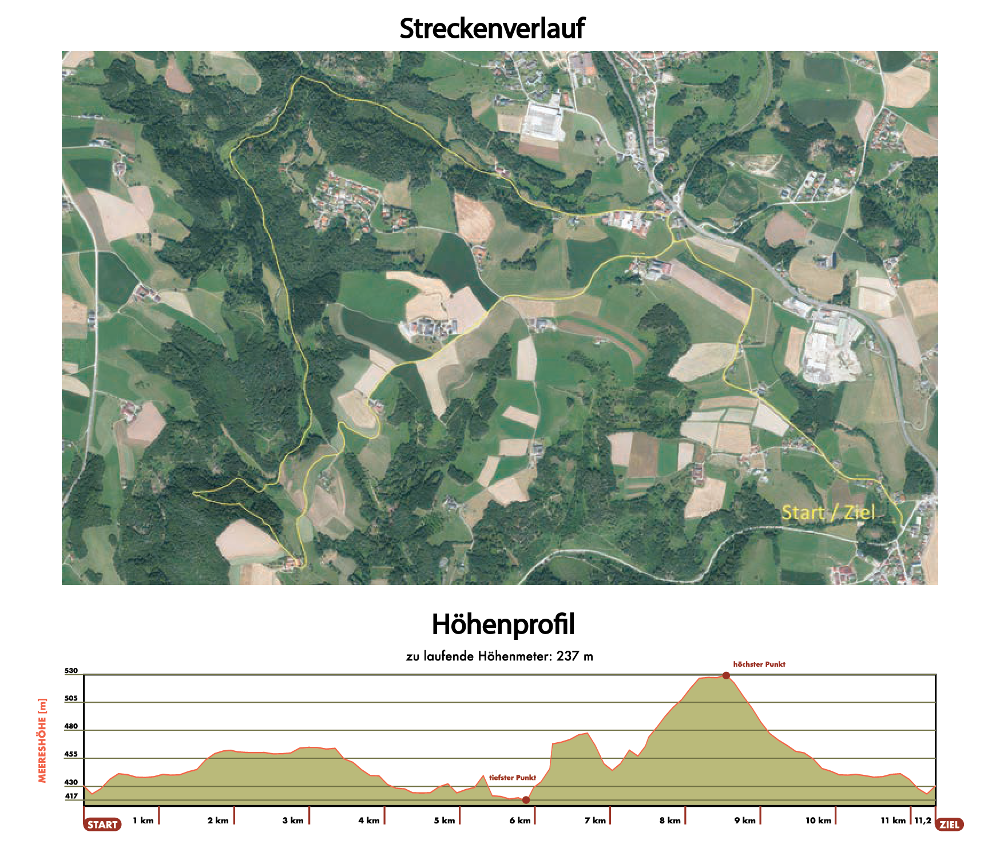

Startzeiten & Strecke
11,2 km, Straßen- und Geländelauf (circa 180 Höhenmeter)
Startzeit: 14 Uhr, Lacken/Feldkirchen
Streckenführung
- Lacken
- Gerling
- Kerzenstein
- Fürstberger
- Gaisbergerhügel
- Lacken
Die Stecke
GPS - Daten
Die GPS-Daten für den Pesenbachtallauf sind wichtig für die genaue Streckenführung und Navigation während des Laufs.
GPS-Daten anzeigenStart und Ziel
Lacken neben Bahnübergang links, siehe auch Lageplan
Klasseneinteilung
Damen/Herren:
- Schüler
- Jugend
- Junioren
- Allgemeine Klasse
- Altersklasse 30, 40, 50, 60, 70 und älter
Staffelwertung
Damen/Herren/Mix, keine Altersklassen
Rang 1 – 3:
- Läufer:in: Lacken – Fürstberger (ca. 6,7 km)
- Läufer:in: Fürstberger – Lacken (ca. 4,5 km)
Chipübergabe beim Fürstberger (Oberwallsee 15, 4101 Feldkirchen/Donau).
Sonderwertung
- Gemeindemeisterschaft Feldkirchen/Donau
- teilnehmerstärkste Mannschaft
Startzeiten & Strecke
ca. 11,2 km, Straßen- und Geländelauf (circa 180 Höhenmeter), Start: 14 Uhr, Lacken/Feldkirchen
Start und Ziel: Lacken neben Bahnübergang links, siehe auch Anreise.
Streckenführung: Lacken-Gerling-Kerzenstein-Fürstberger-Gaisbergerhügel-Lacken
Strecke
Zu den GPS-Daten
Parkplatz-/Lageplan
Zum Lageplan
Mannschaftswertung für alle Feuerwehren
Drei Teilnehmer:innen pro Mannschaft. Alle Teilnehmer:innen werden auch als Einzelstarter:innen gewertet. Bei Anmeldung gleichlautende Feuerwehrbezeichnung bekannt geben. Es kommen nur jene in die Feuerwehrwertung, die bei der Anmeldung das Feld „Feuerwehrwertung“ ankreuzen!
Die Strecke kann auch zu zweit bewältigt werden:
- 1. Läufer:in: Lacken – Fürstberger (ca. 6,7 km)
- 2. Läufer:in: Fürstberger – Lacken (ca. 4,5 km)
Chipübergabe beim Fürstberger (Oberwallsee 15, 4101 Feldkirchen/Donau).
Für die Wertung der schnellsten Feuerwehr werden nur die Einzelstarter:innen berücksichtigt.
Wertung: Rang 1-3 werden mit einem Präsent belohnt.
Startgelder
| Wettbewerb | Voranmeldung (bis 31.10.2024, 18 Uhr) | Nachnennung (bis 1h vor Start) |
|---|---|---|
| Schüler:innen & Jugend | 10€ | 13€ |
| Junioren & Hauptklasse | 20€ | 23€ |
Bezahlung: Die Bezahlung erfolgt bei der Startnummernausgabe.
Umkleiden/Dusche
Es stehen Umkleide- und Duschmöglichkeiten in der Volksschule Lacken Verfügung.
Siegerehrung
16:45 Uhr, Wirt in Pesenbach, Pesenbach 32, 4101 Feldkirchen/Donau
Tombola-Hauptpreise
Gutscheine von Intersport Stöcker (Eferding)- 1. Preis: 300€
- 2. Preis: 200€
- 3. Preis: 100€
Weitere Warenpreise warten auf die bei der Siegerehrung anwesenden Läufer:innen!
Startnummern- & Chipausgabe
Volksschule Lacken, Lacken 5, 4101 Feldkirchen/Donau - Lageplan
Anreise
Lacken liegt 20km von Linz entfernt an der B127 (Rohrbacher Bundesstraße) in Fahrtrichtung Rohrbach. Beim Bahnübergang links, dann nach 200m wieder links befindet sich das Rennbüro (Volksschule Lacken, Lacken 5, 4101 Feldkirchen/Donau, neben der Kirche).